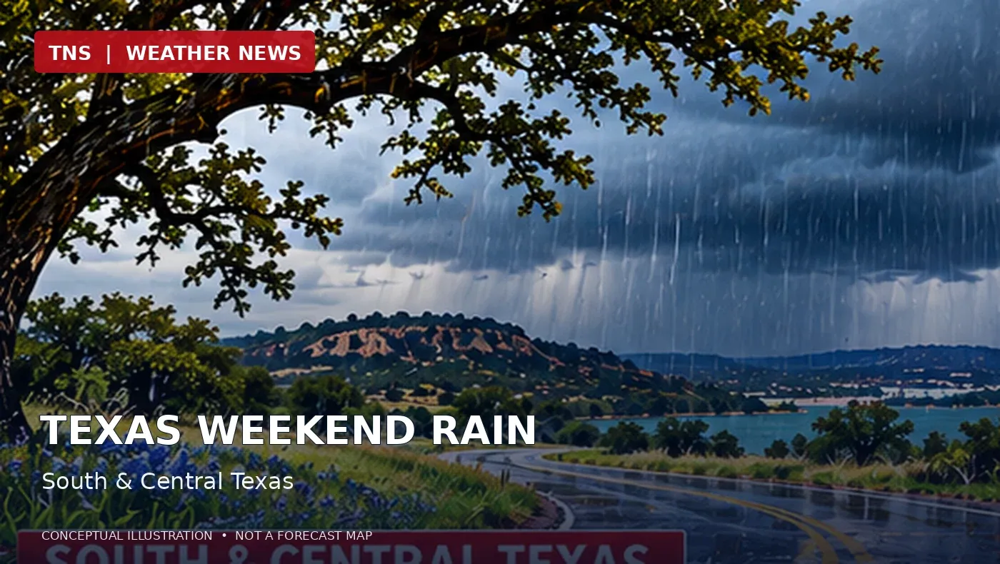

Weekend Rain Returns to Texas as Upper-Level Low Approaches
A slow-moving upper-level disturbance will bring increasing rain chances to South and Central Texas this weekend.

Original AI-generated editorial illustration. Not radar, satellite imagery, or numerical model output.
The setup
A large upper-level low moving slowly from northern Mexico toward Texas will help lift moisture over cooler air at the surface. The National Weather Service expects showers and isolated thunderstorms to develop across southern and central parts of the state during the weekend.
Where the rain is most likely
The Midland/Odessa forecast office places weekend rain chances at 40 to 80 percent, especially south of Interstate 20. The San Angelo office also expects a 40 to 80 percent chance of rain, with a marginal risk of excessive rainfall mainly south of Interstate 20 Saturday and Saturday night. The Corpus Christi office identifies a marginal excessive-rainfall risk Saturday into Sunday.
Timing and impacts
Rain chances increase Saturday and continue into Sunday, with some activity lingering into early Monday. Locally heavy downpours are possible in parts of South Texas, but a marginal excessive-rainfall outlook does not mean widespread flooding is certain. Drivers should watch for water collecting on roads and check for any later advisories.
What the models tell us
The broad-scale forecast is supported by National Weather Service analysis of an upper-level low. This report does not claim an independent verification of a particular HRRR, NAM, GFS, or ECMWF run; forecast details may change as the system approaches.
Official forecast sources
- https://www.ready.noaa.gov/ready2-bin/state.pl?product=discuss&state=tx
- https://www.wpc.ncep.noaa.gov/qpf/excessive_rainfall_outlook_ero.php
Forecast information is time-sensitive. Check the latest official outlooks for changes and active warnings.